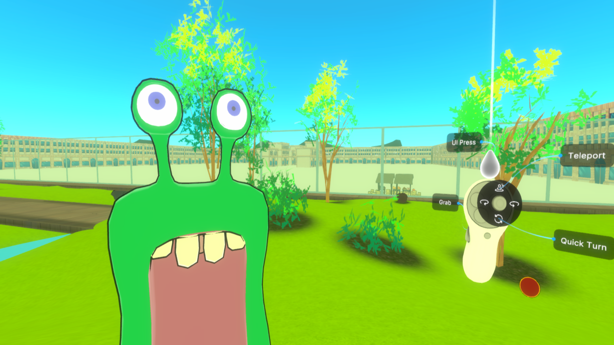

Become the people
Yooba came here from somewhere else. Now the town is full of people like him, and you can be one of them.
A 3D game in your browser
Eat, grow, and find the way home.
Yooba is small, hungry and a long way from home. Eat, grow, and walk him back.
Yooba's story
Yooba came here from somewhere else, down in The Gust, and landed inside a long glass fence with apples, a bridge and a big red orb. Past the broken glass there is a whole town, and it is full of people like him. Every bite makes him bigger. The world stays the same size. The way home is the walk.
Who you will meet on the walk home.

Small, hungry and sure that home is that way.
Drops out of the sky over the bridge, looks a lot like you, and wants to walk together.
Fishes by the water and says the secret is to sit still.
A generous farmer who gave Yooba a golden seed. Yooba is not eating it.
More of the town, the mayor and a goatherd who whistles among them, turns up in the chapters.
The island
Pan and zoom the map. Tap a place to peek, then play from there.
Tap a pin on the map to see a place.
A cartoon world you walk through, with other people in it.
Yooba came here from somewhere else. Now the town is full of people like him, and you can be one of them.
Share the world with other players, right in the browser. Alone or offline, it all still works.
New chapters of the story arrive one episode at a time, and the world changes for everyone on the same day.
Screenshots from the game.
The latest changes to the game.
The title screen and launch text no longer appear on top of the consent dialog. At the largest size, the camera sits closer so Yooba is easier to see on a phone. Yooba Town stutters less during play.
Buildings have cleaner, brighter colours and their surfaces look neater from every angle.
Licorice Reach is a new area to explore, with its own scenery and music. The first trip to the Yooba Town waystone is much quicker. Players who have stepped away now appear faded. The Dark Bell dais can be reached.
The next live moment
Some moments in the story play out once, for everyone online at the same time. The next one's date and time will be posted here before it starts.
PlayYooba is small at the start. Food changes that. The path is how you get home.
Apples come first. Watermelons and pumpkins wait until Yooba is big enough.
Each bite makes Yooba larger. The world stays the same size, so the next step feels different.
Trees, houses, and open grass sit under a big sky. The walk has a direction.
Short notes on how the game plays, and how to open it.